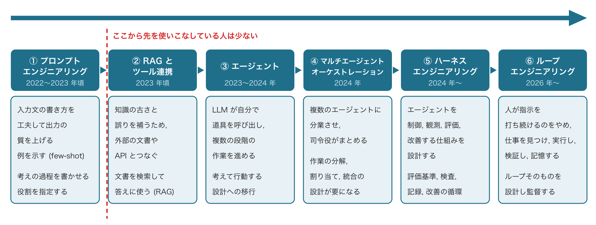
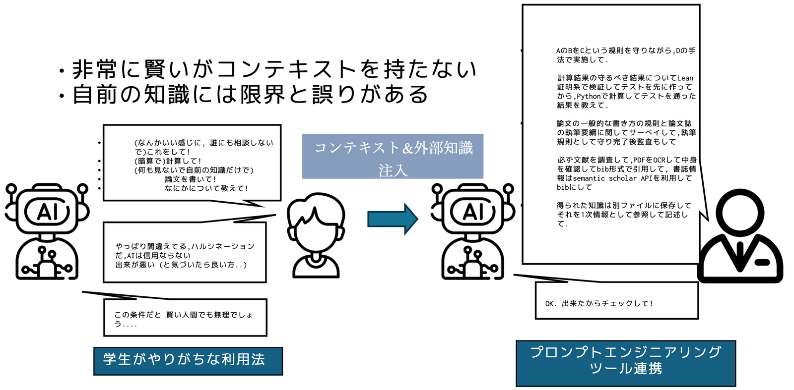
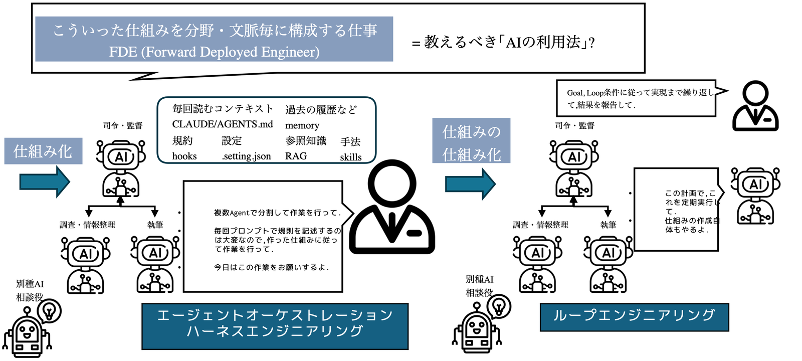
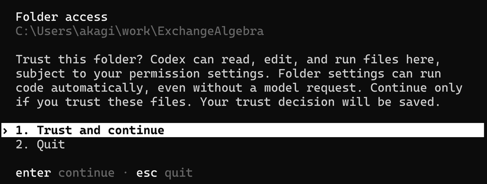
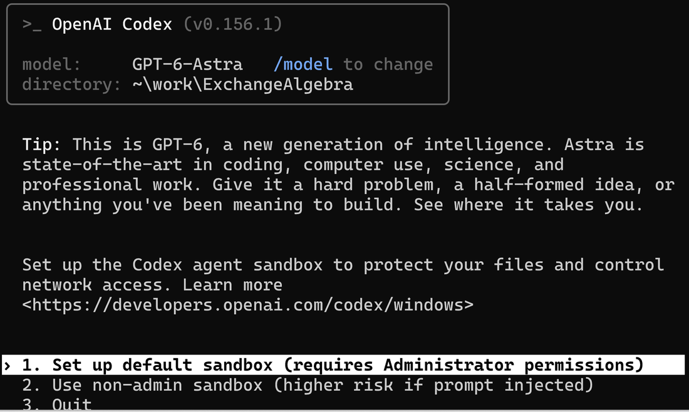
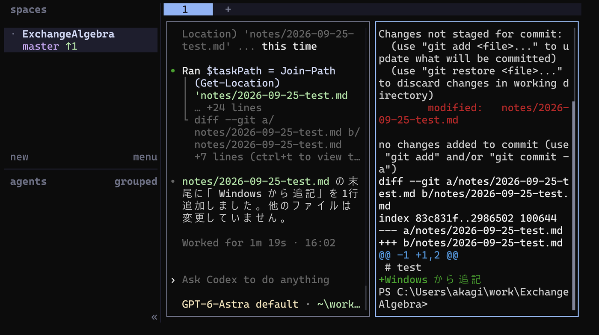
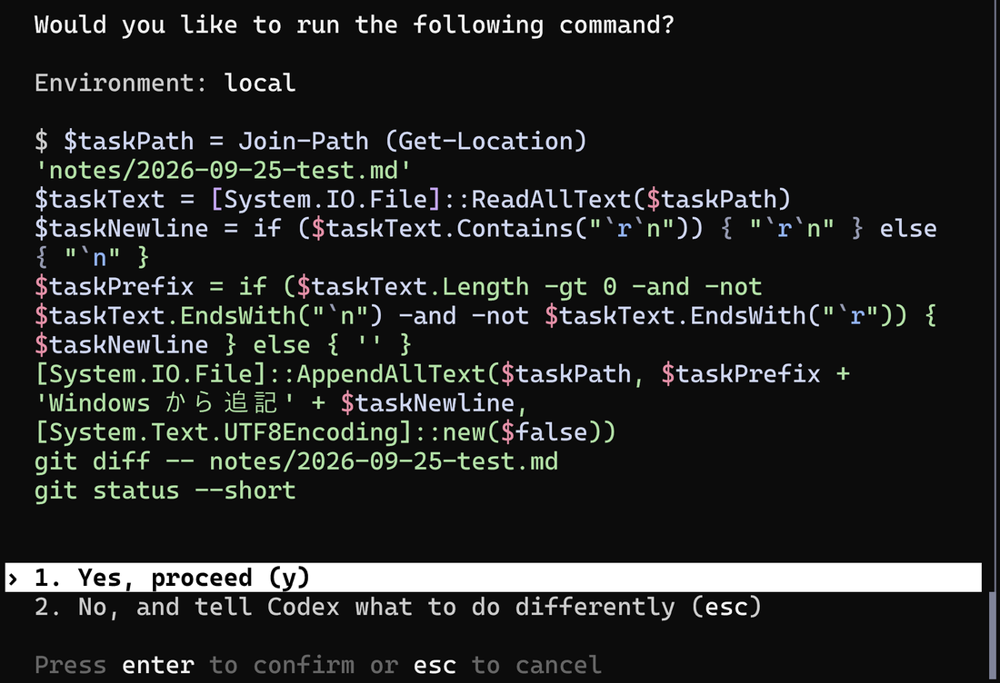
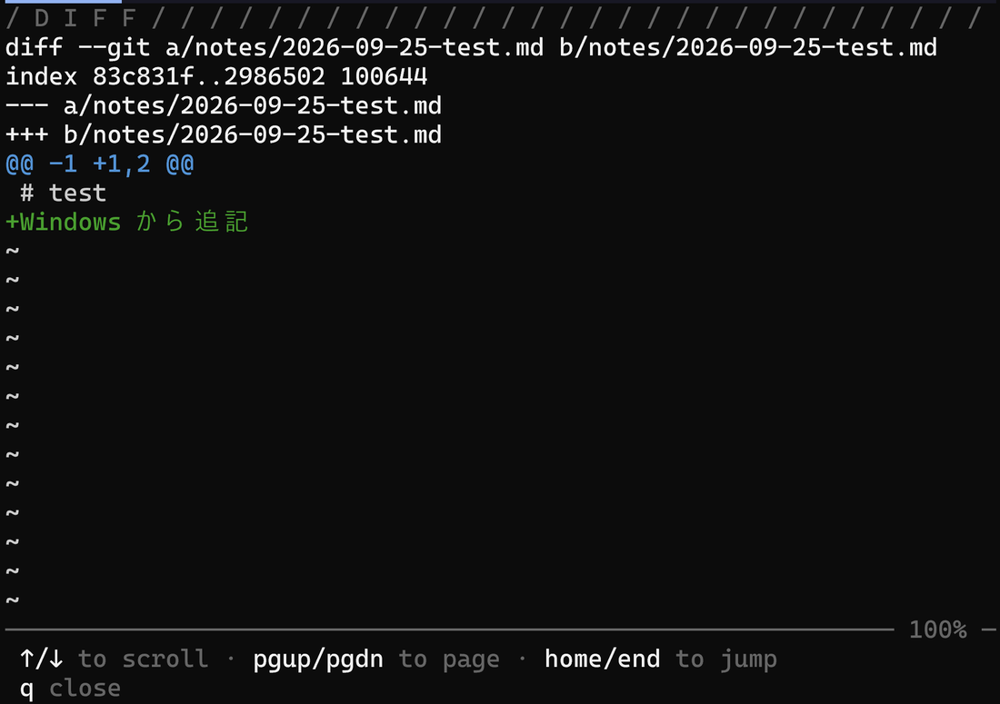
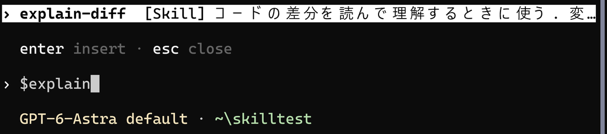
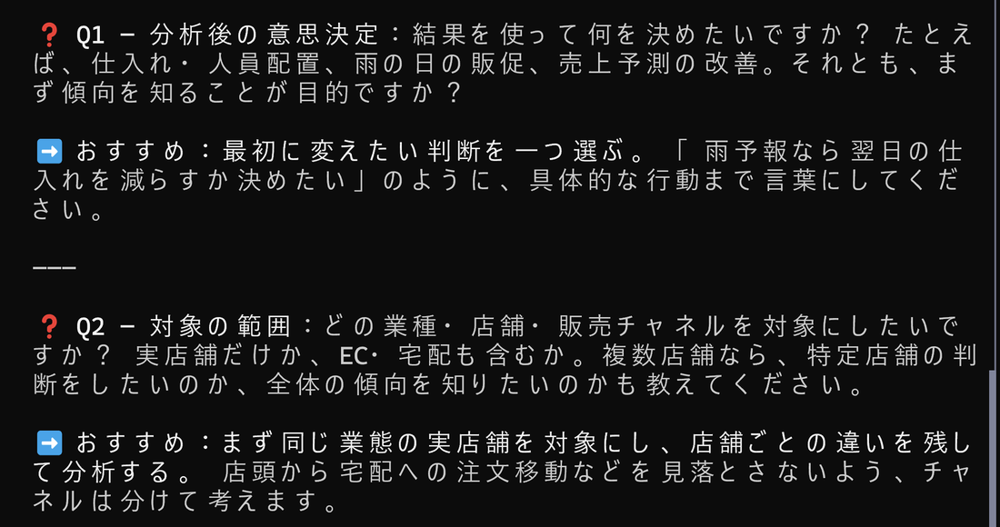

共通資料 コーディングエージェントの利用
資料
本資料は複数の講義で共通に使う資料です. コーディングエージェントに課題のプログラムを書かせ, その結果を読んで直せるようになるために必要な環境と操作, および判断の仕方を扱います.
前提として共通資料 プログラミング用の設定と共通資料 バージョン管理とGitHubを先に読んでください.
大規模言語モデルの仕組みはここでは扱いません. Transformer, 注意機構, 自己教師あり学習といった内部の話は, データサイエンス実践の第8章 ニューラルネットワークと Transformerで扱います.
この資料の情報は, 短い期間で古くなります. モデルの名前と料金, 無料で使える範囲, 画面の表示, コマンドは頻繁に変わります. 資料と実際の画面が食い違ったら, 公式のドキュメントで最新の情報を確かめてください. 新しいモデルや機能は, X (旧 Twitter) などの SNS で開発元や開発者のアカウントをフォローしておくと, 早く知ることができます.
ハーネス: エージェントが動く環境
大規模言語モデル (LLM) は, 入力された文章に続く文字列を予測して生成する仕組みです. LLM 単体では, 手元のファイルを開けず, コマンドも実行できません.
コーディングエージェントは, LLM に次の要素を組み合わせたものです.
- 道具: ファイルを読み書きし, コマンドを実行する機能
- 情報の形式: どのファイルをどの順で LLM に見せるかという決まり
- フィードバック: コマンドの実行結果, エラー, テストの合否
- 足場: リポジトリの決まりを書く
AGENTS.mdと, 繰り返す手順を書く skill
LLM を取り巻くこの環境をハーネスと呼びます. codex は, LLM が提案した操作を道具で実行し, その結果を LLM へ返します. LLM は返された結果を読んで次の操作を決めます.
エージェントの出来は LLM の賢さだけでなく, 与えた環境で決まります. 同じモデルを使っても, データの置き場所と実行方法が書かれたリポジトリでは必要な情報を読めますが, 何も書かれていないリポジトリでは推測が増えます. 学生が担うのは, うまい頼み方を探すことより, エージェントが判断できる環境を作ることと, 出力を読んで確かめることです.
AI の使い方の移り変わり
生成 AI の使い方は, 2022 年ごろから数年のあいだに大きく変わりました. 関心の中心は, 1 回の指示をどう書くかから, AI が働く仕組みをどう作るかへ移っています.

図の各段階は, 前の段階を捨てたのではなく, その上に積み重なっています. ただし, 教員の見るかぎり, 実際に使いこなしている人が多いのは最初のプロンプトエンジニアリング (チャットで指示の書き方を工夫する使い方) までで, それより先を使っている人はまだ少数です. この講義で扱う codex はエージェントの段階に, AGENTS.md と skill はハーネスエンジニアリングの段階に当たります.
学生がやりがちな使い方と, 文脈を与える使い方
LLM は非常に賢い一方で, 頼んだ人の事情や作業の前提 (コンテキスト) を持っていません. また, LLM が学習で身につけた知識には, 限界と誤りがあります.

図の左は, 学生がやりがちな使い方です. 「なんとなく良い感じにして」「計算して」「論文を書いて」と, 前提も材料も渡さずに頼みます. LLM は, 誰にも相談できず, 何も参照できず, 暗算で答えることになります. 結果に誤りがあると「やはりハルシネーション (もっともらしい誤りを事実のように出力すること) だ, AI は信用できない」と判断しがちですが, この条件では賢い人間でも正しく答えられません.
図の右は, コンテキストと外部の知識を渡す使い方です. どの規則を守り, どの手法で進め, 何で結果を確かめるかを指示に書きます. 計算は頭の中でさせずにプログラムで行わせ, 先に作ったテストで確かめさせます. 文献は実際に調べさせ, 本文を確認したものだけを引用させます. 調べて得た知識はファイルに残させ, 次の作業ではそれを参照させます. 図の右下のように, 結果が出たら人が確かめます.
毎回書く指示を仕組みにする: ハーネスエンジニアリング
文脈を与える使い方を毎回の指示だけで続けるのは大変です. そこで, 毎回書いていた決まりや手順を, エージェントが自動で読む仕組みへ移します.

図の左側がハーネスエンジニアリングです. 毎回読ませる決まりを AGENTS.md に, 繰り返す手順を skill に, 参照させる知識を文書やデータベースに置き, 守らせたい規約は設定や検査で強制します. 仕組みを作れば, 人の指示は「今日はこの作業をお願いします」で足ります. 作業を複数のエージェントに分け, 司令役のエージェントが調査役と執筆役をまとめる構成 (オーケストレーション) は, 年表では 1 つ前の段階ですが, 図では同じ側にまとめて描いています. 別の種類の AI に相談役として意見を求め, 1 つのモデルの思い込みを避ける使い方もあります.
図の右側は, 仕組みそのものを作って回す段階 (ループエンジニアリング) です. 人は目標と繰り返しの条件を与えるだけで, エージェントが計画を立て, 定期的に実行し, 結果を確かめ, 仕組み自体も直していきます.
こうした仕組みを分野や職場ごとに組み立てることは, すでに 1 つの仕事になっています (顧客の現場に入って AI の仕組みを作る技術者は FDE, Forward Deployed Engineer と呼ばれます). 教えるべき「AI の使い方」は, 指示の書き方よりも, この仕組みの作り方と確かめ方に移ってきています. この講義で AGENTS.md と skill を自分で書き足していくのは, その最初の一歩です.
エージェントは自分で改良して使いこなす
AI エージェントは, 自分が使いやすいように改良し, 自分の手で設定を書き足してカスタマイズし, いろいろな製品を試すことでしか, 上手く使いこなせるようになりません. この資料の手順は入口であって, 完成した形ではありません.
教員も, 自分の作業に合わせて複数のエージェントをまとめて動かす仕組みを作り込み, その過程をこのブログに書いています (全体像はMulti-Repo Agent Orchestrator, ほかの記事は記事の一覧). これは教員の環境に合わせた一例で, そのまま真似るための手本ではありません. 記事の構成もすぐに古くなるので, 自分で組み立てるときに, どういう工夫がありうるかを知る材料として読んでください.
sandbox と承認
codex は sandbox の中でコマンドを動かします. 既定では作業ディレクトリの中だけを書き換え, ネットワークを使いません. 作業ディレクトリの外のファイルを変える操作や, ネットワークを使うコマンドには, 実行前の承認を求めます.
既定の Ask for approval のまま使います.
承認の設定の一覧 (/permissions で切り替えられます)
| 設定 | 動作 |
|---|---|
Read Only |
作業ディレクトリのファイルを読むだけです. 編集とネットワークには承認が要ります |
Ask for approval |
作業ディレクトリ内の読み書きとコマンドの実行を進め, ネットワークと作業ディレクトリの外のファイルには承認を求めます |
Approve for me |
危険と判定された操作だけ確認を求めます |
Full Access |
作業ディレクトリの外の編集もネットワークも, 確認なしに行います |
計画を相談するときは Read Only, 実際に書かせるときは Ask for approval を使います. Approve for me と Full Access は, 何を確認なしに実行させるかを自分で判断できるようになるまで使いません.
承認画面もハーネスから返される情報の一部です. 許可する前に, どの操作がなぜ必要なのかを読みます. 説明できない操作への対処は分からないまま承認しないで扱います.
環境構築
この講義では codex (エージェント本体) と herdr (エージェントを動かすターミナル) の 2 つを入れます. git と GitHub CLI は共通資料 バージョン管理とGitHubで先に入れておいてください.
この講義で codex を使う理由
エージェントの仕組みは codex に固有のものではありません. Anthropic の Claude Code や Google の Gemini CLI でも, 同じように作業ディレクトリへ指示を出し, 同じ操作ができます. この資料の AGENTS.md, skill, sandbox と承認の考え方は, 道具が変わっても読み替えて使えます. この講義で OpenAI の codex を選んだのは, 学生に ChatGPT が広く知られていて, ChatGPT のアカウントでそのままログインできるためです.
Meta も 2026 年 8 月 5 日に, ターミナルで動くエージェントの Muse Code をベータ版として公開しました. Meta のモデル Muse Spark (最新は 1.3, 文脈長は 100 万トークン) で動き, 標準で /plan, /grill, /goal の skill を持ちます. 公開時に案内された対応 OS は macOS と Linux で, Windows は含まれていません. 利用は Meta の API か OpenRouter 経由で, 料金はトークンあたりの従量です (muse-spark-1.3 で, 入力が 100 万トークンあたり 1.25 ドル, 出力が 4.25 ドル). 月額のアカウントで使う codex とは, 契約の形が異なります.
codex を入れる
codex は OpenAI が配布しているコーディングエージェントです.
Windows は共通資料 プログラミング用の設定で導入を確かめた winget で入ります. ただし入れる前に, 開発者モードをオンにします. 「設定」を開き, 「システム」の「詳細設定」にある「開発者向け」の欄で, 開発者モードをオンにします. 確認が出たら「はい」を押します.

開発者モードをオンにしてから, PowerShell で次を実行します. 終わったら PowerShell を開き直します.
winget install -e --id OpenAI.Codex開発者モードがオフのまま入れると, 「インストールが完了しました」と表示されても, PowerShell を開き直したあとに codex が認識されません. winget はコマンド名 codex を実行ファイルへ結び付けるリンクを作りますが, 開発者モードがオフだとこのリンクを作れず, 実行ファイルが codex-x86_64-pc-windows-msvc.exe のような長い名前のまま残るためです. herdr も codex を見つけられなくなります.
すでにこの状態になった場合は, 開発者モードをオンにしてから, 次の 2 つを実行して入れ直します.
winget uninstall -e --id OpenAI.Codex
winget install -e --id OpenAI.CodexmacOS は Homebrew で入ります.
brew install --cask codex入ったことを確認します.
codex --versioncodex にログインする
codex は ChatGPT のアカウントを使います. 初回は codex を起動すると Sign in with ChatGPT が選択肢に出ます. codex login を実行しても同じ画面へ進めます. Sign in with ChatGPT を選び, ブラウザで ChatGPT にログインしてからターミナルへ戻ります.
ログインの状態は次のコマンドで確認できます.
codex login statusデータサイエンス実践では ChatGPT Plus (月 20 ドル) を 3 ヶ月間契約することを推奨します. 契約の時期は講義中に案内します. 他の講義での扱いは, それぞれの講義で案内します.
契約していない場合は, 無料の ChatGPT アカウントでも codex を使えます. ただし無料アカウントは利用量の上限が最も小さく (具体的な量は公表されていません), 講義の演習を続けるには足りなくなると思われます. 契約する前に, まず無料アカウントで試してください. 上限に達して作業が止まるようなら, 契約を検討します.
herdr を入れる
herdr は, エージェントを動かすためのターミナルです. 1 つの作業ディレクトリを複数の画面に分け, エージェントの状態をまとめて確認できます.
Windows は PowerShell で次を実行します.
powershell -ExecutionPolicy Bypass -c "irm https://herdr.dev/install.ps1 | iex"macOS と Linux は次を実行します.
curl -fsSL https://herdr.dev/install.sh | shherdr は winget では入りません. winget を検索すると hdosys.herdr-win という項目が出てきますが, これは herdr の開発元ではない第三者が配布しているものです. 上のコマンドを使ってください.
Windows のセキュリティ製品が上のコマンドを止めることがあります. その場合は herdr.dev から install.cmd をダウンロードして実行する手順が用意されています.
入ったことを確認します.
herdr --version動作確認
共通資料 バージョン管理とGitHubで clone したディレクトリへ移動し, codex を起動します. ディレクトリの移動は共通資料 プログラミング用の設定の「CLI の基本操作」を参照してください.
codex初回の起動では, 対話の前に確認が出ます.
最初の確認は, このフォルダを信頼するかです. codex がこのディレクトリのファイルを読み書きし, コマンドを実行してよいかを聞いています. 自分で clone したリポジトリなので 1. Trust and continue を選びます. 他人から受け取ったファイルのように中身を知らないディレクトリでは選びません.

Windows の場合
Windows では続けて, sandbox をどう用意するかを聞かれます. 1. Set up default sandbox を選び, ユーザー アカウント制御の確認で「はい」を押します. codex は管理者権限を使って, コマンドを実行するための権限の弱いユーザとネットワークの規則を Windows に作ります. 大学の貸与 PC のように管理者権限が無い場合は 2. Use non-admin sandbox を選びます. こちらは管理者権限なしで動きますが, 画面の注記のとおり, 悪意のある指示を含むファイルを codex が読んだときの防御が弱くなります.

Sandbox ready と表示されたら準備は完了です. 次のように入力します.
このリポジトリについて説明してREADME の内容を説明してくれれば動いています. /exit で終了します.
操作の最小セット
毎回の作業では, herdr の中に codex 用と確認用の 2 つの画面を置きます. ファイルを変更する場所は, clone した 1 つのディレクトリです. branch は main のまま使います.
herdr の画面
作業ディレクトリへ移動して herdr を実行すると, バックグラウンドのセッションに接続します. セッションが無ければ, その場で起動します. 初回は案内画面が出ます.
herdr の画面は pane に分かれます. pane はコマンドを入力する実際のターミナルで, クリックして移動できます. 右クリックのメニューから, 右または下へ分割できます.
画面は workspace, tab, pane の 3 段に分かれます. workspace はプロジェクト単位の入れ物で, herdr を実行したディレクトリに対応します. tab は workspace の中に置く画面です. pane の境界をドラッグすると大きさが変わり, 文字列をドラッグして選ぶとコピーできます.
キーボード操作は prefix 方式です. ctrl+b を押して離し, 続けて次のキーを押します. pane の分割は, 上のとおり右クリックのメニューでもできます. 授業ではキーボード操作を扱わないので, 慣れてから使ってください.
| 操作 | キー |
|---|---|
| 右に pane を分割 | prefix + v |
| 下に pane を分割 | prefix + - |
| 新しい tab | prefix + c |
| 一覧を表示 | prefix + ? |
| 切り離す | prefix + q |
画面の切り離しと状態表示
切り離す操作を detach と呼びます. detach しても pane の中の処理は止まりません. 同じディレクトリでもう一度 herdr を実行すると, 続きへ戻れます. バックグラウンドのセッションまで完全に止めるコマンドは herdr server stop です.
herdr は pane の中で動くエージェントを検出し, サイドバーに状態を表示します.
| 状態 | 意味 |
|---|---|
working |
作業中 |
blocked |
入力待ち |
done |
完了 |
idle |
待機中 |
左の pane で codex を動かし, 右の pane は変更の確認に使う配置にします. 2 つの pane は同じディレクトリを見ているので, 変更した内容を codex に頼んで右の pane に表示させると, 指示と結果を並べて読めます. git diff などのコマンドは, 自分で打たなくても codex が実行します.

codex との対話
作業ディレクトリで codex を実行すると対話が始まります. 指示は日本語の文章で構いません. 何を作るか, どのファイルを使うか, どう確認するかを書きます.
data/sales.csv に, 日付と売上金額の架空のデータを 12 行作ってください. 次に src/analysis.py を作り, そのデータを読み込んで月ごとの売上合計を表示するプログラムを書いてください. 実行して結果も見せてくださいこの時点では data/ にデータがまだ無いので, 例では架空のデータを作らせる指示も一緒に書いています. codex は必要なファイルを読み, ファイルを変更し, コマンドを実行します. 読んでいるファイルと, 実行したコマンドの結果は画面に表示されます. 既定の Ask for approval では, 作業ディレクトリ内の編集と実行は確認なしに進み, その外へ出る操作では確認が出ます. ただし Windows では, ファイルを読むだけのコマンドにも確認が出ることがあります. 確認が出たら, 表示されたコマンドを読み, 何をしようとしているかを説明できるようになってから答えます.

1. Yes, proceed は, そのコマンドを今回だけ許可します. 同じ種類のコマンドを以後確認なしに実行させる don't ask again の選択肢が出ることもありますが, 中身を理解したコマンドに限って選びます.
対話中によく使う操作は次のとおりです.
| 操作 | 用途 |
|---|---|
/new |
前の会話の文脈を捨て, 同じ codex の中で新しい会話を始めます |
/status |
モデル, 承認の設定, 文脈の残り容量を表示します |
/model |
モデルと思考の深さ (reasoning effort) を切り替えます. 詳しくは次の「モデルの切り替え」で説明します |
/exit |
codex を終了します. /quit も同じです |
そのほかの操作
| 操作 | 用途 |
|---|---|
/diff |
codex の画面の中に, 変更したファイルの差分を表示します. 新規ファイルも含みます. 右の pane や VSCode で見るほうが読みやすいときは, 使わなくても構いません |
/clear |
画面を消し, 新しい会話を始めます |
/permissions |
承認の設定 (Read Only, Ask for approval など) を切り替えます |
/resume |
前回の会話に戻ります |
/init |
AGENTS.md の雛形を作ります |
/skills |
skill の一覧を表示して選びます |
/diff の表示は次のようになります. + で始まる緑の行が codex の追加した行で, - で始まる行が削除した行です. q で閉じます.

Windows では, /diff が Failed to compute diff: ... not supported with windows sandbox と表示して差分を出さないことがあります. codex の sandbox と /diff の組み合わせで起きる不具合で, 手元の操作の誤りではありません. そのときは codex に 右の pane に, 変更の差分を表示してください と頼んで, 同じ変更を読みます.
課題が変わるときは /new を使います. 話が噛み合わなくなり, 画面も整理したいときは /clear を使います. codex は Ctrl+C でも終了できます.
@ を打つとファイル名を検索して指示に貼れます. 行頭に ! を付けると, その行をシェルコマンドとして実行できますが, 慣れるまでは使わなくて構いません.
codex が作業している間に追加の指示が必要になったら, Enter で割り込ませます. 現在の作業が終わった後に実行させる指示は, Tab で次の順番に予約します.
モデルの切り替え
codex が使うモデルは, 対話の途中で切り替えられます. 現行の OpenAI のモデルは, GPT-6 の Astra, Sol, Luna の 3 種類です (Sol は 2026 年 9 月に 6.1 へ更新されました). 数字は 2026 年 10 月時点で OpenAI が公表している値です. 変わることがあります.
| モデル | 向く作業 | API 料金 (100 万トークンあたり. 入力 / 出力) | Plus での 5 時間あたりのメッセージ数の目安 |
|---|---|---|---|
| Astra | 最も難しい作業. 最も高性能です | 10 ドル / 50 ドル | 5〜45 件 |
| Sol | 複雑なコーディングとエージェントの作業 | 2 ドル / 10 ドル | 15〜160 件 |
| Luna | 範囲を絞った作業と大量の処理 | 0.1 ドル / 0.5 ドル | 350〜3,000 件 |
Sol の料金は Astra の 5 分の 1, Luna の料金は Sol の 20 分の 1 です. ChatGPT のアカウントで使うときは API の料金を払うわけではありませんが, 高いモデルほど, 上限までに送れるメッセージが少なくなります. 上の表の右端がその目安です.
この講義では, 基本的に Luna を使います. 演習の小さなプログラムは Luna で十分に書けます. 思ったとおりに動かないときや, 複数のファイルにまたがる大きな変更を頼むときは Sol に切り替えます. Astra は必要ありません.
モデルは対話の中で /model を入力して切り替えます.
/modelを入力します. モデルの一覧が出るので, 矢印キーで選んでEnterを押します- 続けて思考の深さを選ぶ画面が出ます. 深くするほど, 答えるまでの時間と使う量が増えます. 迷ったら既定のままにします
/statusを入力して, 表示されたモデル名が選んだものに変わっていることを確認します
切り替えは, 次の指示から有効になります. すでに終わった作業は変わりません. 起動のときに決めたいなら codex -m gpt-6-luna のように, -m の後ろにモデル名を付けます. 上限に近づくと, 使う量の少ないモデルへの切り替えを勧める表示が出ることがあります. Sol を使っているときにこの表示が出たら, 作業の途中でも /model で Luna に切り替えられます.
1 周の手順
毎回の作業は, 次の 1 周です. 最初の演習で実際に通します.
Exercise AGENT-1
1 周の手順で小さなプログラムを作る
clone したリポジトリで, 次の手順に沿って, 月ごとの売上合計を表示するプログラムを作り, GitHub へ記録する.
- 作業ディレクトリで
herdrを起動し, pane を左右に分けます. 左の pane でcodexを起動します. - 何を, どのファイルに, どう確認するかを指示します. 「実行して結果も見せてください」と添えると, プログラムを動かして確かめる作業まで codex が行います.
- 確認が出たら, 操作と対象を読んでから答えます. 分からなければ, 答える前に
この操作は何をしますかと聞きます. - 作業が終わったら, 変更を確かめます. 次のどちらかを codex に頼み, 出てきた差分を読みます.
変更したファイルを VSCode で開いてください右の pane に, 新しく作ったファイルも含めて, 変更の差分を表示してください
- 説明できない行があれば,
この行は何をしていますかと聞きます. 説明された結果と実際の結果が一致するかも見ます. - 記録する前に,
記録するファイルを一覧にして, 鍵やデータが含まれていないか確認してください. 差分は右の pane に表示してくださいと頼みます. 一覧と差分を読み, 含めたくないものがなければ進めます. commit して push してくださいと頼みます. コマンドが表示されるので, 読んでから許可します.
回答例
手順 2 では, 次のように入力します.
data/sales.csv に, 日付と売上金額の架空のデータを 12 行作ってください. 次に src/analysis.py を作り, そのデータを読み込んで月ごとの売上合計を表示するプログラムを書いてください. 実行して結果も見せてください手順 3 では, 表示されたコマンドの対象が作業ディレクトリの中のファイルであることを読んでから許可します. 手順 4 と 5 では, src/analysis.py を VSCode で開かせ, 月ごとに合計している行を この行は何をしていますか と聞いて確かめます. 画面に出た月ごとの合計が, data/sales.csv の数字を足した結果と合っているかも見ます.
手順 6 では, 一覧に src/analysis.py が含まれ, data/sales.csv が含まれていないことを確認します. data/ は .gitignore で除外してあるので, 一覧に出ないのが正しい状態です. 手順 7 で git commit と git push の中身を読み, 記録の説明が作業内容と合っていることを確かめてから許可します.
意味を理解していない操作は, 許可しないでください. とくに push は, 記録した内容を GitHub に送る操作です. 鍵やデータが含まれたまま送ると, 情報が外へ出てしまい, 取り消せないことがあります. 表示されたコマンドの意味が分からないときは, 許可せずに, このコマンドは何をしますか と codex に聞く, 自分で調べる, 教員に聞く, のいずれかで意味を確かめてから進めます. 分からない機能を試すことは, 使いながら理解していくための方法ですが, 理解する前に許可することとは別です.
git の各コマンドと差分の読み方は共通資料 バージョン管理とGitHubを参照してください. codex に頼むときも, 何が起きているかを自分で説明できる必要があります.
AGENTS.md: リポジトリの決まりごとを読ませる
codex は起動時に AGENTS.md を読みます. AGENTS.md には, 実行方法, 公開してはいけないもの, 書き換えてよい範囲など, リポジトリで繰り返し守る決まりを書きます.
AGENTS.md を読む順番と上限
codex は最初に ~/.codex/AGENTS.md を読みます. ここにはすべてのリポジトリに共通する決まりを書けます. 次に, リポジトリの root から現在のディレクトリまでを順にたどり, 各ディレクトリの AGENTS.md を読みます. 後から読んだ内容が優先されます.
読み込める量は合計 32 KiB までです. 上限を超えた部分は読まれず, 空のファイルも無視されます. 起動のたびに読み直すので, 書き換えた後は codex を起動し直します.
/init で雛形を作れます. この講義では AGENTS.md を配布しません. 次に示すのは 1 つの事例です. 自分の課題で困ったことが起きたら, その原因を防ぐ決まりを自分で書き足し, リポジトリに合わせて育てていきます.
# 作業の決まり
- 説明は日本語で書く. 変更する前に, 何をするかを 2〜3 行で示す.
- Python は `uv run` で実行する. ライブラリを追加するときは理由を書く.
- `data/` と `.env` の中身を出力や commit に含めない. 集計結果だけを扱う.
- プログラムを変更したら実行し, 結果またはエラーをそのまま報告する.
- 分からないことは推測で埋めず, 質問する.
- `notes/` は本人が自分の言葉で書く場所なので, エージェントは書き換えない.
- 根拠を示すときは, 実際に読んだ資料や実行した結果だけを引く.各行には次の役割があります.
- 「説明は日本語で書く」は, 差分と実行結果を学生が読める言葉へそろえ, 変更前の計画を承認の判断材料にします
- 「Python は
uv runで実行する」は, 毎回同じ実行方法を使わせ, ライブラリの追加理由を差分と報告から確認できるようにします - 「
data/と.envの中身を出力や commit に含めない」は, 提供データと鍵が codex の画面や GitHub へ出る範囲を狭めます - 「変更したら実行する」は, コードの見た目だけでなく, 実行結果またはエラーを確認できるようにします
- 「推測で埋めず, 質問する」は, 情報が足りない箇所を勝手な値や処理で埋めるのを防ぎます
- 「
notes/を書き換えない」は, 学生本人の理解とエージェントの出力を分けます - 「実際に読んだ資料や実行した結果だけを引く」は, 確認していない説明を根拠として扱わないための決まりです
書き足す決まりの候補
教員が研究で使っている決まりから, データ分析の課題にも当てはまるものを選び, 学生向けに書き直しました. すべてを入れる必要はありません. 自分の課題で「防ぐこと」の列の問題が起きた, または起きそうだと思ったときに, 対応する行を自分の言葉で書き足します.
| 分類 | 決まり | 防ぐこと |
|---|---|---|
| 問いと理解 | 問い, 考察, 結論は自分で決めて書く. エージェントには分析の実行と材料の整理を頼む | 自分の問いと解釈がエージェントの文章に置き換わること |
| 問いと理解 | コードを書かせる前に, 設計を議論して決める. 決まっていないことを質問の形で挙げさせる (曖昧な計画を質問で詰める) | 曖昧な計画のまま書かれたコードを, 後から読み解くこと |
| 問いと理解 | 説明を受けたら, 自分の理解を言葉にしてエージェントに確かめさせる. 誤りや抜けがあれば指摘させる | 分かったつもりのまま次へ進むこと |
| 文献 | 文献を引用するときは, 本文 (少なくとも序論と結論) を読んだものだけを使う. 要旨だけで引用しない | 論文が述べていないことを, 述べたことにして引用すること |
| 文献 | 文献名だけの情報は手がかりとして扱い, 読んだ箇所 (URL やページ) と一緒に literature/ に記録する |
誰も確かめていない文献が参考文献に残ること |
| データ | 提供されたデータや生のデータは, .gitignore で除外した data/raw/ などにだけ置き, 分析は加工したデータで行う |
生のデータを誤って commit すること |
| データ | アンケートの回答など他人の記録を引用するときは, 名前を ID に置き換える | 回答者が特定されること |
| データ | データの中身をエージェントに読ませず, 列の名前と型は読み込むコードや説明から伝える | 機微なデータがエージェントの画面と OpenAI のサーバへ送られること |
| 作業の進め方 | 前処理や分析手法を変える変更は, 先に方針を示させ, 了承してから進めさせる | 欠損値の扱いや分析手法が知らないうちに変わること |
| 作業の進め方 | 見つけたバグやデータの矛盾は後回しにせず, その場で直すか, 直せない理由を書く | 気づいた問題が残ったまま提出すること |
| 作業の進め方 | commit の直前に git diff --staged を読ませ, 頼んでいない変更が混ざっていたら止めさせる |
意図しない変更が記録に紛れ込むこと |
文献の 2 行は, 手順が長くなるので, skill: 繰り返す手順を切り出すで示す skill (lit-verify) にまとめる方法もあります.
AGENTS.md はエージェントへの指示であり, 機械的な制限ではありません. codex に差分を表示させ, 実際の変更を自分で読む手順は残ります.
Exercise AGENT-2
AGENTS.md の有無で応答を比べる
AGENTS.mdを置かない状態で codex を起動し,data/sales.csv に日付と売上金額の架空のデータを 12 行作ってと頼む. 続けてdata/sales.csv の先頭 5 行を見せてと頼む.- 応答を記録して codex を終了する.
- AGENTS.md: リポジトリの決まりごとを読ませるの事例の
AGENTS.mdをリポジトリの root に置く. - codex を起動し直し, 同じ指示を出す.
- 2 つの応答の違いと, その理由を書く.
回答例
AGENTS.md が無いときは, 先頭 5 行の中身をそのまま表示する応答が考えられます. AGENTS.md があるときは, data/ の中身を出力しないという決まりを読み, 表示を断るか, 個々の行を見せない集計へ置き換える応答が期待されます.
これは期待される違いであり, 応答を保証するものではありません. AGENTS.md は codex が判断に使う指示であり, ファイルへのアクセスを機械的に止める仕組みではないためです.
skill: 繰り返す手順を切り出す
skill は, 繰り返す手順を SKILL.md に書き, エージェントに使わせる仕組みです. 1 つの skill は 1 つのディレクトリに置きます. SKILL.md は必須で, 補助するプログラムを scripts/, 長い資料を references/ に置けます.
skill の置き場所と書き方
リポジトリで共有する skill は .agents/skills/<名前>/SKILL.md に置きます. codex はリポジトリの root から現在のディレクトリまでにある .agents/skills/ を探します. 自分だけがすべてのリポジトリで使う skill は ~/.agents/skills/<名前>/SKILL.md に置きます. 後で紹介する skill-installer は ~/.codex/skills/ に置きますが, こちらも codex が読む個人用の置き場です.
SKILL.md の frontmatter には name と description が要ります. description には何をするかだけでなく, いつ使うかを書きます. 指示の中に $名前 と書くか, /skills から選ぶと呼び出せます. 指示が description に合う場合は, codex が自分で選ぶこともあります.
次の explain-diff は, 変更を読んでも意味が分からないときに使う例です.
---
name: explain-diff
description: コードの差分を読んで理解するときに使う. 変更箇所ごとに日本語で説明する.
---
# 差分の説明
1. 変更されたファイルをすべて確認する.
2. 変更箇所ごとに, 「何をしているか」を説明する.
3. 続けて, 「なぜそう書いたか」を説明する.
4. 説明には, 実際に読んだコードと実行結果だけを使う.
5. 新しく作られたファイルも省略しない.
6. 分からない箇所は推測せず, 分からない理由を書く.
7. 最後に, 学生が確かめる質問を 3 つ挙げる.もう 1 つの例: 文献の本文確認
2 つ目の例は, 文献を引用する前の確認です. 教員が研究で使っている skill を, 課題向けに書き直しました.
---
name: lit-verify
description: 文献を引用するとき, または参考文献に文献を加えるときに使う. 本文を読んだことを確かめ, literature/ に記録する.
---
# 文献の本文確認
1. 文献を検索し, DOI か, 変わらない URL を得る.
2. 本文を開き, 少なくとも序論と結論を読む. 引用したい主張が書かれた節があれば, その節も読む.
3. `literature/<著者><年>.md` に次を書く.
- 書誌 (著者, 年, 題名, 掲載誌, DOI または URL)
- 読んだ箇所 (節の名前かページ)
- 内容の要約 (1〜3 文)
- この課題のどこで, 何の根拠として引用するか
4. 本文を読めない場合 (有料で開けない, 見つからない) は引用しない. 読めなかったことと理由を報告する.
5. 要旨しか読んでいない, 後で読む予定, 前にも引用した, 被引用数が多い, のいずれも引用の理由にしない.要旨は論文の宣伝文を兼ねるので, 本文の主張とずれることがあります. 要旨だけで引用すると, 論文が述べていないことを根拠にしてしまいます. literature/ の記録は codex が書き, 自分で開いて内容を確かめます. 記録先を notes/ と分けておけば, AGENTS.md に「notes/ は書き換えない」と書いたとき, 自分の理解を書く場所と codex の記録が混ざりません.
explain-diff は自分が理解するための手順, lit-verify は根拠を確かめるための手順です. 手順を何度も頼んでいると気づいたら, AGENTS.md を長くする前に, 1 つの作業として skill へ切り出せるかを考えます.
資料の skill を codex に導入させる
この講義では skill のファイルを配布しません. 資料に載せた SKILL.md の内容を, codex に登録させます. explain-diff であれば, codex に次のように頼み, 続けて上の例の内容を貼ります.
次の内容で skill を登録してください. 名前は explain-diff です.置き場所は codex が決めます. 書き込みの前に確認が出るので, 書こうとしている内容が貼った内容と同じであることを読んでから許可します.
登録できたら, 次の順で確かめます.
どこに登録しましたかと聞き, 答えられたファイルを VSCode で開かせて, 貼った内容と同じことを確かめます.- codex を起動し直し,
$を打ちます. skill の一覧が開くので, 続けて名前の一部を打ち,explain-diffが出ることを確かめます./skillsの List skills でも同じ一覧が開きます. - 一覧から選ぶか
$explain-diffと入力し, 続けて説明してほしい内容を書いて呼び出します. 手順どおりに, 変更箇所ごとの説明と確かめる質問 3 つが返るかを見ます. - リポジトリに登録された skill は,
commit して push してくださいと頼めば, 課題のコードと一緒に GitHub に残ります.

使ううちに手順が課題に合わなくなったら, SKILL.md を自分で書き換えます. AGENTS.md と同じく, 資料の skill は出発点です.
公開されている skill を使う
GitHub などで公開されている skill もあります. その 1 つの grill-me は, Matt Pocock が MIT ライセンスで公開している skill 集 (mattpocock/skills) に含まれる skill で, 曖昧な考えを, エージェントからの質問に答えながら決定へ詰めていくための skill です. エージェントは, いま決められる問いをまとめて示し, それぞれに推奨の答えを添えます. 答えると, その答えを前提にした次の問いが出ます.
導入には, codex に最初から入っている skill-installer を使います. grill-me は質問の進め方を grilling という別の skill に置いているので, 2 つを一緒に入れます.
$skill-installer https://github.com/mattpocock/skills の skills/productivity/grill-me と skills/productivity/grilling を入れてくださいskill-installer は GitHub から skill を取ってきて, 作業ディレクトリの外にある ~/.codex/skills/ に置きます. ネットワークと作業ディレクトリの外を使うので, 実行の前に確認が出ます. 取ってくる先が上で指定したリポジトリであることを読んでから許可します. ~/.codex/skills/ に置いた skill は, すべてのリポジトリで使えます. 入れた後は codex を起動し直します.
grill-me は, skill の設定で自動では使われないようになっているので, 頼まない限り codex が自分から使うことはありません. 計画を詰めたいときに, 新しい会話を始め, $grill-me に続けて考えを書きます.
$grill-me 気象データと売上データを組み合わせて, 雨の日に売上がどう変わるかを分析したい問いは番号付きで返り, それぞれに推奨の答えが付きます. 次の図は最初の回答の一部です.

grill-me は, 答える側が主導して初めて役に立ちます. 推奨の答えに同意を続けるだけでは, エージェントが書いた計画に頷いたことにしかなりません. 分からない問いには分からないと答え, 話が課題の範囲から外れたら止めます. グラフの見せ方のように, 実物を見ないと決められない問いに行き当たったら, 質問を続けずに小さく作って確かめてから答えます. 手作業で同じことを行う手順は曖昧な計画を質問で詰めるにあります.
公開されている skill を入れる前に, SKILL.md を読み, 何をさせる手順なのかとライセンスを確かめます. skill はエージェントへの指示なので, 中身を知らない skill を入れることは, 中身を知らない指示をエージェントに渡すことになります.
分からないまま承認しない
自分で説明できないコードを使えるのは学校の課題までです. 仕事や研究では, 中身の分からないコードを使うわけにはいきません. この講義でも, 提出したプログラムについて「なぜそう書いたか」「この行は何を意味するか」を質問します.
codex の出力を承認するときは, 次の順で確認します.
- 確認が出たら, 何をしようとしているかを読んでから答えます. 分からなければ, 答える前に
この操作は何をしますかと codex に聞きます. - 作業後に, codex に頼んで変更の差分を VSCode か右の pane に表示させて読みます. 説明できない行があれば
$explain-diffで説明させ, それでも分からなければ質問します. - 小さな入力でプログラムを動かします. 説明どおりの結果になるかを見ます.
- 新しく分かったことを
notes/の日付付きファイルに自分の言葉で書きます.AGENTS.mdに「notes/は書き換えない」と書いておけば, 自分の理解だけが残ります.
判断の基準は, 提出したプログラムの任意の行について「なぜそう書いたか」と聞かれて答えられることです. データサイエンス実践では, 最終回の発表の質疑でこれを問います. 答えられない行が残っていれば, その行はまだ承認できません.
Exercise AGENT-3
変更を説明できる状態にする
codex に小さなプログラムを書かせ, 変更の差分を VSCode か右の pane に表示させて読みます. 分からない行を $explain-diff で説明させ, 各行の意味を notes/ の日付付きファイルへ自分の言葉で書いてください. 提出するものは notes/ のファイルです.
回答例
次の 4 項目を notes/ に書きます.
# 小さなプログラムの確認
- 頼んだこと: 何を入力し, 何を出力するプログラムか
- 変更された場所: 差分で見たファイルと行
- 各行の意味: 自分の言葉で 1 行ずつ説明したもの
- 確認した結果: 小さな入力と, 実際に得られた出力skill の説明をそのまま貼るのではなく, 自分が理解した言葉へ書き換えます. 説明できない行が残った場合は, 質問と回答も記録します.
AI の開発環境と実行環境
AI を使う環境は, モデルを作る段階と, できたモデルを使う段階に分かれます.
| 段階 | 何をするか | 必要な環境 | この講義で行うか |
|---|---|---|---|
| 学習 | 大量のデータからモデルを作る | 多数の計算機と大量のデータ | 行いません |
| 推論 | できたモデルへ入力し, 出力を得る | モデルを動かす計算機 | codex で行います |
codex のモデルは OpenAI のサーバで動きます. codex が読んだ手元のファイルの内容は, 指示と一緒にサーバへ送られます. data/ に置いた提供データや個人情報は, codex に読ませた時点で手元の PC の外へ出ます.
共通資料 バージョン管理とGitHubで public と private を選ぶときと同じ基準で, 外部へ送ってよい情報かを判断します. AGENTS.md に data/ を読まないよう書くことは判断の助けになりますが, 機械的な保証ではありません. 手元で動かせる小さなモデルもありますが, この講義では扱いません.
AI が書いたプログラムを動かす場所には, 次の違いがあります.
| 実行場所 | 使う場面 | この講義での位置づけ |
|---|---|---|
| 手元の PC | 通常の分析と課題 | 基本の環境 |
| Google Colab のようなクラウドのノートブック | GPU が必要な計算 | 必要な章で使う環境 |
| サーバ | プログラムを常時動かす | 必要になったときに使う環境 |
codex が実行するコマンドは, 手元の PC にある sandbox の中で動きます. モデルが OpenAI のサーバで動くことと, プログラムが手元で動くことは別です.
発展: エージェントを使って理解を深める
この節は任意です. データサイエンス実践では成績評価の対象にしませんが, ここで残した記録と理解は, 最終回の発表でプログラムの理由を問われたときに効きます.
notes/ に理解を残す
notes/ には日付付きのファイルを作り, 次の 4 つを書きます.
- 何をエージェントに頼んだか
- 何が返ってきたか
- どこが分からなかったか
- 質問や実行によって, どう分かったか
会話の全文を貼るのではなく, 後から同じ問題に出会った自分が使える説明へ書き直します. エージェントではなく本人が書くことで, 説明できる部分と分からない部分が分かれます.
曖昧な計画を質問で詰める
課題の計画が曖昧なときは, すぐにコードを書かせず, 決まっていないことを質問へ変えます.
- エージェントに
この計画で決まっていないことを質問の形で 5 つ挙げてくださいと頼みます. - 5 つの問いに自分で答えます. 答えられない問いを「自分の理解が足りない」「情報が足りない」「試していない」の 3 つに分けます.
- 「自分の理解が足りない」問いは説明を求め, 自分の言葉で書き直します.
- 「情報が足りない」問いは, 課題文やデータの説明を確認します.
- 「試していない」問いは, 小さな入力で確かめる内容を決めます.
- 答えと確認方法を計画に書き戻してから, プログラムを作らせます.
質問を増やすことが目的ではありません. 答えられない理由を分けると, 読む, 聞く, 試すのどれを次に行うかが決まります.
質問を挙げさせる部分は, 公開されている skill を使うで紹介した grill-me に任せることもできます. その場合も, 答えられない問いを 3 つに分ける作業は自分で行います.
発展: branch と worktree
通常の課題では, main のまま 1 つのディレクトリで codex を動かします. エージェントを 2 つ同時に動かしたいときは, 同じファイルを互いに上書きしないよう, branch と worktree で作業場所を分けます.
commit を 1 つの丸で表します. commit するたびに右へ 1 つ伸びていきます. main は, その先頭を指す名前です.
●───●───●
C1 C2 C3
↑
mainbranch は, ある commit から記録を枝分かれさせる仕組みです. C3 から 2 本に分け, それぞれ別の作業を進められます.
●───● ← feat/graph エージェント A が作業
╱ A1 A2
●───●───●
C1 C2 C3 ↑
main
╲ B1 B2
●───● ← feat/clean エージェント B が作業A の作業と B の作業は互いに見えません. A が何をしても main と B は変わらないので, 失敗しても他の作業へ影響しません.
作業が済んだら main へ合流 (マージ) させます. 合流は 1 本ずつ行います. まず A を合流させると, main は合流の記録 M1 を指します.
●───●
╱ A1 A2 ╲
●───●───● ●
C1 C2 C3 M1 ← main
╲ B1 B2
●───●続けて B を合流させると M2 になります.
●───●
╱ A1 A2 ╲
●───●───● ●───●
C1 C2 C3 M1 M2 ← main
╲ B1 B2 ╱
●───●───2 回目の合流で A と B が同じファイルの同じ行を別々に変えていると, git はどちらを採るか決められません. git は合流を止め, その箇所に印を付けて人に判断を求めます. これがコンフリクトです. 片方の変更を黙って消さず, 判断が必要な場所で止まります.
branch を切り替えると, ディレクトリの中身がその branch の状態へ入れ替わります. 1 つのディレクトリでは同時に 1 つの branch しか開けないため, A と B を同時には動かせません.
worktree は, 同じリポジトリに対して作業用のディレクトリを複数持つ仕組みです. 記録の実体は最初に clone したディレクトリの .git にあり, 追加したディレクトリはそこを参照します.
~/work/repo/ 記録の実体 (.git) はここ
[main] ← 自分が見る場所
↑ ↑
│ 参照 │ 参照
~/work/repo-graph/ ~/work/repo-clean/
[feat/graph] [feat/clean]
エージェント A エージェント B3 つのディレクトリは別々のファイルを持つので, A と B は互いの変更を上書きしません. git の記録は共有しているため, A の commit は B からも見えます.
記録の実体は最初のディレクトリにあります. ~/work/repo/ を消すと, 追加した worktree も使えなくなります.
herdr では herdr worktree create --branch <名前> で worktree を作れます. 詳しい操作はこの講義では扱いません.
この資料を使う講義
この資料は, 次の講義から参照されます. 講義ごとの扱いは, それぞれの資料の最初の章で案内します.